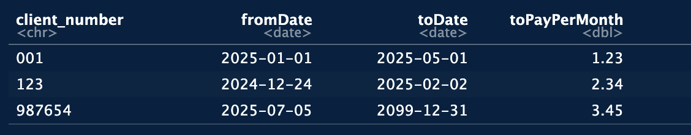

client_number,fromDate,toDate,toPayPerMonth
"001",2025-01-01,2025-05-01,1.23
"123",2024-12-24,2025-02-02,2.34
"987654",2025-07-05,2099-12-31,3.45Abstract
In this blog I will show you how you can use the fread-function of the data.table-package to read in csv-files which don’t adhere to certain standards for csv-files. For this I recommend using a predefined table of structure-information of the csv to read in, which will be used in a function to read in the csv via fread and then convert the data into the correct types.

Use case
Imagine we have to read a csv-file into R in order analyze the data further.
Besides the functions
read.csv()from the utils-package,read_csv()from the readr-packageduckdb_read_csv()from the duckdb-package
among others, we will focus on the fread() from the data.table-package as it delivers quite an extraordinary performance. The other functions would offer you the same functionality, maybe with a different syntax.
Our csv-file may look like this
If we read it with fread and let the function decide how to transform the columns into datatypes
library(data.table)
dt = fread("./nice.csv")
dt client_number fromDate toDate toPayPerMonth
<int> <IDat> <IDat> <num>
1: 1 2025-01-01 2025-05-01 1.23
2: 123 2024-12-24 2025-02-02 2.34
3: 987654 2025-07-05 2099-12-31 3.45we can see, that
it correctly encoded the Dates
fromDateandtoDateas well as the numbertoPayPerMonth,but it wrongly turned the
client_number, which we wanted to be a character (as was indicated by the leading 0 and the quotation marks around the data) into an integer type
Note
Let me mention here, that if there had been one letter in the first column, then fread would have guessed correctly to use a character-type for the column.
We could correct that with some easy data-transformations.
Unfortunately our (real) csv
is without an header
doesn’t adhere to common datatype conventions
001,20250101,05012025,1.23
123,20241224,02022025,2.34
987654,20250705,12312099,3.45Furthermore it represents dates in different formats depending on the column.
Solution
Developing a solution
The fread-function offers some options/attributes to solve this problems:
col.namescolClasses
Note
For a detailed explanation of what you can do with the data.table-package please see
Barrett T, Dowle M, Srinivasan A, Gorecki J, Chirico M, Hocking T, Schwendinger B, Krylov I (2025). data.table: Extension of ‘data.frame’. R package version 1.17.99, https://r-datatable.com.
A two step process (reading and post-processing) with these two attributes will give us
dtUgly = fread("./ugly.csv",
col.names = c("client_number", "fromDate", "toDate", "toPayPerMonth"),
colClasses = c("character","character","character","numeric"))
dtUgly[,':='(fromDate = as.Date(fromDate, format = "%Y%m%d"),
toDate = as.Date(toDate, format = "%m%d%Y"))]
dtUgly client_number fromDate toDate toPayPerMonth
<char> <Date> <Date> <num>
1: 001 2025-01-01 2025-05-01 1.23
2: 123 2024-12-24 2025-02-02 2.34
3: 987654 2025-07-05 2099-12-31 3.45which is the correct solution.
Using predefined data-structures
If you are reading such a csv only once the procedure above works quite well. But if you have several different csv-files it might be tedious to program a separate function for each csv.
Imagine you have a function with the attributes
pathToCSVstructureOfCSV
The key to this function is the kind of information that you encode in structureOfCSV. This attribute is a data.table with the following columns:
namesfor the column-namesclassesfor die classes of the columnsdateTypesfor the format of the date-columnsnumericFactorfor manipulations to numeric columns
Let’s have a look at the function
readCSV = function(pathToCSV,
structureOfCSV) {
# read csv
dt = fread(input = pathToCSV,
col.names = structureOfCSV$names,
colClasses = structureOfCSV$classes)
# convert date-types
dateCols = structureOfCSV[!is.na(dateTypes),.(names, dateTypes)]
if(nrow(dateCols) > 0) {
for (i in 1:nrow(dateCols)) {
name = dateCols[i]$names
dt[,(name) := as.Date(get(name),format = dateCols[i]$dateTypes)]
}
}
# convert numeric types
numericCols = structureOfCSV[!is.na(numericFactor),.(names, numericFactor)]
if(nrow(numericCols) > 0) {
for (i in 1:nrow(numericCols)) {
name = numericCols[i]$names
dt[,(name) := get(name) * numericCols[i]$numericFactor]
}
}
return(dt)
}The corresponding structure for our file “ugly.csv” would look like this
structureOfCSV = data.table(
names = c("client_number", "fromDate", "toDate", "toPayPerMonth"),
classes = c("character","character","character","numeric"),
dateTypes = c(NA_character_,"%Y%m%d","%m%d%Y",NA_character_),
numericFactor = c(NA_real_,NA_real_,NA_real_,NA_real_)
)Let’s see how it can all work together:
tbl = readCSV("./ugly.csv",
structureOfCSV)
tbl client_number fromDate toDate toPayPerMonth
<char> <Date> <Date> <num>
1: 001 2025-01-01 2025-05-01 1.23
2: 123 2024-12-24 2025-02-02 2.34
3: 987654 2025-07-05 2099-12-31 3.45and it will do the trick.
Tip
To go even further you would have a repository of different structureOfCSV-objects - one for each kind of csv-file you have to read.
You cold even build some wrapper-functions around readCSV which use just the predefined structure. Imagine you have the structures structureofCSV1 and structureOfCSV2.
structureOfCSV1 = data.table(
names = c("client_number", "fromDate"),
classes = c("character","character"),
dateTypes = c(NA_character_,"%Y%m%d"),
numericFactor = c(NA_real_,NA_real_)
)
structureOfCSV2 = data.table(
names = c("client_number", "toDate", "toPayPerMonth"),
classes = c("character","character","numeric"),
dateTypes = c(NA_character_,"%m%d%Y",NA_character_),
numericFactor = c(NA_real_,NA_real_,NA_real_)
)You would then build the following functions
readCSV1 = function(pathToCSV) {
readCSV(pathToCSV = pathToCSV,
structureOfCSV = structureOfCSV1)
}
readCSV2 = function(pathToCSV) {
readCSV(pathToCSV = pathToCSV,
structureOfCSV = structureOfCSV2)
}
# usage
#dt1 = readCSV1("insert path here")
#dt2 = readCSV2("insert path here")
Note
We didn’t use the option of numericFactor as our csv had a decimal point. You would have used this option if the values are in cent instead of dollar/euro.
You could also expand the functionality of readCSV further by providing columns in structureOfCSV such as
rounding, to round numbers
split.character, to split a character column into several columns containing different informations
etc.